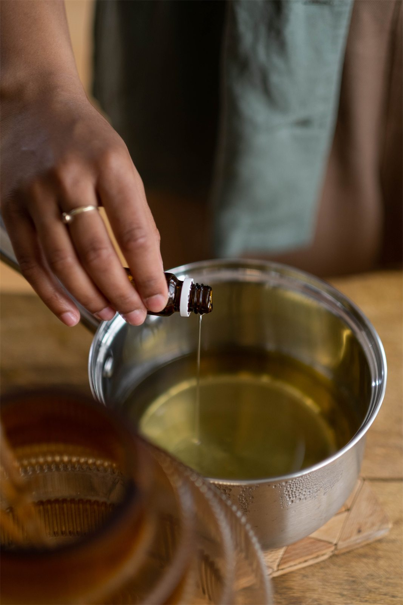

Our story
憩い ikoi is a Japanese word for rest and relaxation—a pause to breathe and feel at ease. That feeling is at the heart of Ikoi by Asho: making room for small, restorative moments in the middle of everyday life.
Our story
Ikoi by Asho is a Kenyan candle studio creating hand-poured scented soy candles for everyday pauses, thoughtful gifts and quiet evenings at home.
Explore the candle collection
憩い ikoi is a Japanese word for rest and relaxation—a pause to breathe and feel at ease. That feeling is at the heart of Ikoi by Asho: making room for small, restorative moments in the middle of everyday life.
Each scented soy candle is poured by hand with care. From the woodsy notes of Hinoki Morning to the bright lift of Yuzu Light, our collection is created to bring warmth to quiet evenings, personal rituals and thoughtful gifting.
Meet the founder
I’m Ashley K, a young Kenyan creative who finds joy in art, nature, reading, and discovering little ways to brighten life for myself and those around me.
Asho was a nickname given to me when I was very little. I chose it for the brand to honour that younger version of myself.
Ikoi by Asho was born during a season of healing. In candle-lit moments, I learned to slow down, breathe, and be still. That quiet helped me reconnect with myself, rebuild my confidence, and find peace.
My father walked beside me through every season with patience, faith, and a steady calm. He taught me to be still even in chaos, believe in myself, and trust that things can work for good. Ikoi is my way of honouring his support and sharing that peace with others navigating their own seasons.
To me, ikoi is a pause—a reset and a place of calm. Each candle is hand-poured with scented soy wax, with the hope that its glow helps you feel grounded, safe, and at ease. I once imagined Ikoi as an endless sakura, a reminder that hope and renewal can keep unfolding.
I hope my story encourages you to believe in yourself and face your fears each day, whatever season you’re in.
Explore the scented soy candle collection and find a fragrance for your next quiet moment or thoughtful gift.
Discover the candles